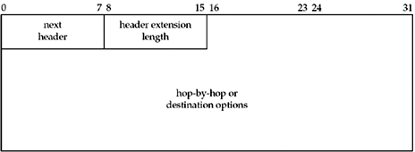
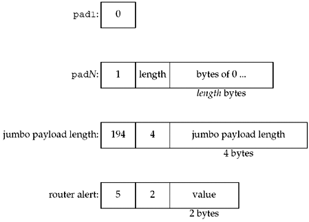
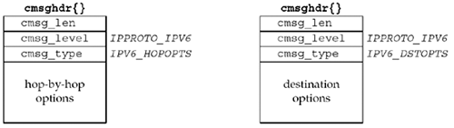

| [ Team LiB ] |
|
27.5 IPv6 Hop-by-Hop Options and Destination OptionsThe hop-by-hop and destination options have a similar format, shown in Figure 27.7. The 8-bit next header field identifies the next header that follows this extension header. The 8-bit header extension length is the length of this extension header, in units of 8 bytes, but not including the first 8 bytes. For example, if this extension header occupies 8 bytes, then its header extension length is 0; if this extension header occupies 16 bytes, then its header extension length is 1, and so on. These two headers are padded to be a multiple of 8 bytes with either the pad1 option or the padN option, which will be described shortly. Figure 27.7. Format of hop-by-hop and destination options. The hop-by-hop options header and destination options header each hold any number of individual options, which have the format shown in Figure 27.8. Figure 27.8. Format of individual hop-by-hop and destination options.
This is called TLV coding because each option appears with its type, length, and value. The 8-bit type field identifies the option type. Additionally, the two high-order bits specify what an IPv6 node does with this option if it does not understand the option:
The next high-order bit specifies whether or not the option data changes en route:
The low-order 5 bits then specify the option. Note that all 8 bits make up the option code; the low-order 5 bits do not by themselves identify the option. However, option value assignments are made to keep the low-order 5 bits unique for as long as possible. The 8-bit length field specifies the length of the option data in bytes. The type field and this length field are not included in this length. The two pad options are defined in RFC 2460 [Deering and Hinden 1998] and can be used in either the hop-by-hop options header or in the destination options header. The jumbo payload length, a hop-by-hop option, is defined in RFC 2675 [Borman, Deering, and Hinden 1999], and it is generated when needed and processed when received entirely by the kernel. Router alert, a hop-by-hop option, is described for IPv6 in RFC 2711 [Partridge and Jackson 1999] and is similar to the IPv4 router alert. We show these in Figure 27.9. Other options are also defined, for instance, for Mobile-IPv6, but we do not show them here. Figure 27.9. IPv6 hop-by-hop options. The pad1 byte is the only option without a length and value. It provides 1 byte of padding. The padN option is used when 2 or more bytes of padding are required. For 2 bytes of padding, the length of this option would be 0 and the option would consist of just the type field and the length field. For 3 bytes of padding, the length would be 1, and 1 byte of 0 would follow this length. The jumbo payload length option provides a datagram length of 32 bits and is used when the 16-bit payload length field in Figure A.2 is inadequate. The router alert option indicates that this packet should be intercepted by certain routers along the path; the value in the router alert option indicates what routers should be interested. We show the padding options because each hop-by-hop and destination option also has an associated alignment requirement, written as xn + y. This means that the option must appear at an integer multiple of x bytes from the start of the header, plus y bytes. For example, the alignment requirement of the jumbo payload option is 4n + 2, and this is to force the 4-byte option value (the jumbo payload length) to be on a 4-byte boundary. The reason why the y value is 2 for this option is because of the 2 bytes that appear at the beginning of each hop-by-hop and destination options header (Figure 27.8). The alignment requirement of the router alert option is 2n + 0, to force the 2-byte option value to be on a 2-byte boundary. The hop-by-hop and destination options are normally specified as ancillary data with sendmsg and returned as ancillary data by recvmsg. Nothing special needs to be done by the application to send either or both of these options; just specify them in a call to sendmsg. To receive these options, the corresponding socket option must be enabled: IPV6_RECVHOPOPTS for the hop-by-hop options and IPV6_RECVDSTOPTS for the destination options. For example, to enable both options to be returned, const int on = 1; setsockopt(sockfd, IPPROTO_IPV6, IPV6_RECVHOPOPTS, &on, sizeof(on)); setsockopt(sockfd, IPPROTO_IPV6, IPV6_RECVDSTOPTS, &on, sizeof(on)); Figure 27.10 shows the format of the ancillary data objects used to send and receive the hop-by-hop and destination options. Figure 27.10. Ancillary data objects for hop-by-hop and destination options. The actual contents of the IPv6 option header is passed between the user and the kernel as the cmsg_data portion of these objects. To reduce code duplication, seven functions are defined to create and process these data sections. The following four functions build an option to send:
inet6_opt_init returns the number of bytes required to hold an empty extension header. If the extbuf argument is not NULL, it initializes the extension header. It fails and returns -1 if the extbuf argument is supplied but the extlen argument is not a multiple of 8. (All IPv6 hop-by-hop and destination options headers must be multiples of 8 bytes.) inet6_opt_append returns the updated total length of the extension header after appending the specified option. If the extbuf argument is not NULL, it also initializes the option and inserts any necessary padding. It fails and returns -1 if the new option does not fit in the supplied buffer. The offset argument is the current running total length, and must be the return value from a previous call to inet6_opt_init or inet6_opt_append. The type and len arguments are the type and length of the option, and are copied directly into the option header. The align argument specifies the alignment requirement, that is, x from the function xn + y. The value of y is derived from align and len, so it does not need to be explicitly specified. The databufp argument is the address to a pointer that will be filled in with the location of the option value; the caller can then copy the option value into this location using the inet6_opt_set_val function or any other method. inet6_opt_finish is called to complete an extension header, adding any needed padding to make the overall header a multiple of 8 bytes. As before, if the extbuf argument is non-NULL, the padding is actually inserted into the buffer; otherwise, the function simply computes the updated length. As with inet6_opt_append, the offset argument is the current running total length, the return value from a previous inet6_opt_init or inet6_opt_append. inet6_opt_finish returns the total length of the completed header, or -1 if the required padding will not fit in the supplied buffer. inet6_opt_set_val copies an option value into the data buffer returned by inet6_opt_append. The databuf argument is the pointer returned from inet6_opt_append. offset is a running length within this option; it must be initialized to 0 for each option and then will be the return value from the previous inet6_opt_set_val as the option is built up. The val and vallen arguments specify the value to copy into the option value buffer. The expected use of these functions is to make two passes through the list of options you intend to insert: the first to calculate the desired length, and the second to actually build the option into an appropriately sized buffer. During the first pass, we call inet6_opt_init, inet6_opt_append once for each option we will append, and inet6_opt_finish, passing NULL and 0 for the extbuf and extlen arguments, respectively. We then dynamically allocate the option buffer using the size returned by inet6_opt_finish, and we will pass this buffer as the extbuf argument during the second pass. During the second pass, we call inet6_opt_init and inet6_opt_append, either copying the data manually or using inet6_opt_set_val for each option value. Finally, we call inet6_opt_finish. Alternately, we can pre-allocate a buffer that should be large enough for our desired options and skip the first pass; however, this is vulnerable to failure if a change in the desired options would over-run the pre-allocated buffer. The remaining three functions process a received option:
inet6_opt_next processes the next option in a buffer. extbuf and extlen specify the buffer containing the header. As with inet6_opt_append, offset is a running offset into the buffer. It is 0 for the first call to inet6_opt_next, and then it is the return value from the previous call for future calls. typep, lenp, and databufp return the type, length, and value of the option, respectively. inet6_opt_next returns -1 if the header is malformed or if it has reached the end of the buffer. inet6_opt_find is similar to the previous function, but it lets the caller specify the option type to search for (the type argument) instead of always returning the next option. inet6_opt_get_val is used to extract values from an option, using the databuf pointer returned by a previous inet6_opt_next or inet6_opt_find call. As with inet6_opt_set_val, the offset argument must start at 0 for each option, then must be the return value of a previous call to inet6_opt_get_val. |
| [ Team LiB ] |
|